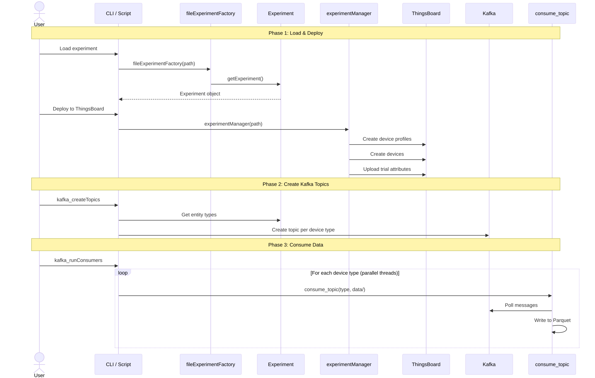
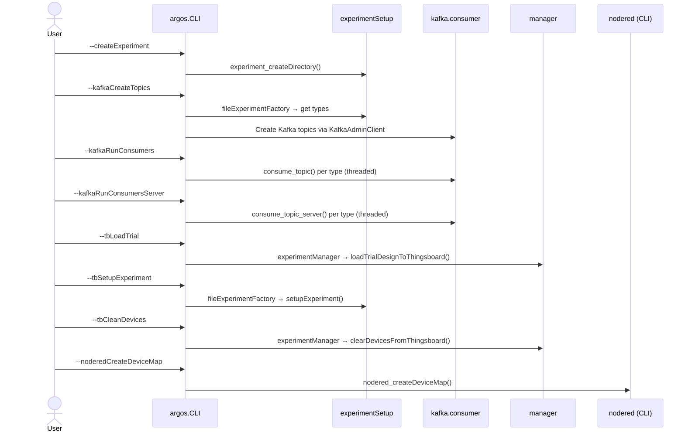

Core Concepts¶
This page describes the architecture and design patterns that underpin the entire pyArgos system — how all modules fit together, their dependencies, and the key design decisions.
System-Wide Module Map¶

Module Dependency Matrix¶
| Module | Depends on (internal) | Depends on (external) |
|---|---|---|
experimentSetup |
utils.jsonutils, utils.logging |
gql (optional, for web), matplotlib, requests |
manager |
experimentSetup, utils.jsonutils, utils.logging |
tb_rest_client (optional) |
kafka.consumer |
utils.parquetUtils |
kafka-python, numpy, pandas |
CLI |
experimentSetup, kafka.consumer, manager |
kafka-python |
nodered.manager |
— | requests |
nodered.nodes |
— | dask, fastparquet, pandas |
noSQLdask.cassandraBag |
— | cassandra-driver, dask, pandas |
noSQLdask.mongoBag |
— | pymongo, dask, pandas |
utils.jsonutils |
— | pandas |
utils.parquetUtils |
— | dask, pandas, shutil |
utils.logging |
— | logging (stdlib) |
Design principle: Modules at the bottom of the stack (utils, noSQLdask) have no internal dependencies — they only depend on external libraries. Higher-level modules (manager, CLI) depend on lower-level ones. This avoids circular imports.
Class Hierarchy¶
pyArgos organizes experiment data in a hierarchical object model:

See Experiment Setup Architecture for the full deep-dive.
Factory Pattern¶
pyArgos uses the Factory pattern to abstract experiment loading from different sources:

fileExperimentFactory¶
- Loads from a local directory
- Auto-detects ZIP vs extracted JSON format
- Handles version migrations (1.0.0 through 3.0.0)
- Default: uses current working directory
webExperimentFactory¶
- Fetches from ArgosWEB via GraphQL
- Requires server URL and authentication token
- Retrieves entity types, entities, trial sets, and trials
- Images are fetched via HTTP on demand
Swimlane: Full Experiment Deployment¶
This diagram shows the complete flow from loading an experiment to deploying it on ThingsBoard and starting data collection:

Swimlane: CLI Command Routing¶
The CLI (argos.CLI) routes user commands to the appropriate module:

Property Type System¶
Entities and trials have typed properties. The Trial class includes parsers for each type:
| Property Type | Parser | Output |
|---|---|---|
location |
_parseProperty_location |
{name, latitude, longitude} |
text |
_parseProperty_text |
String value |
textArea |
_parseProperty_textArea |
String value |
number |
_parseProperty_number |
Numeric value |
boolean |
_parseProperty_boolean |
Boolean value |
datetime_local |
_parseProperty_datetime_local |
Datetime (Israel timezone) |
selectList |
_parseProperty_selectList |
Selected value from predefined options |
Container Hierarchy Resolution¶
The fillContained module resolves entity hierarchies where entities can be contained within other entities:
This function:
- Traverses the "contains" relationships between entities
- Inherits parent properties to child entities
- Handles property type conversion (Number, String)
- Spreads flattened attributes (e.g.,
location->mapName,latitude,longitude)
Pandas as Data Interface¶
A key design decision in pyArgos is exposing data as Pandas DataFrames wherever possible:
experiment.entitiesTable- All entities as a flat DataFrameexperiment.entityTypeTable- Entity types summarytrialSet.trialsTable- All trials in a settrial.propertiesTable- Trial-level propertiesentity.propertiesTable- Entity constant propertiesentity.allPropertiesTable- All properties including trial-specific
This makes it easy to filter, join, and analyze experiment metadata using standard Pandas operations.
Design Decisions¶
Why optional external dependencies?¶
ThingsBoard (tb_rest_client), GraphQL (gql), Cassandra (cassandra-driver), and MongoDB (pymongo) are all optional. pyArgos gracefully handles their absence with try/except imports. This allows users to install only what they need — a researcher doing offline analysis doesn't need ThingsBoard, and a deployment engineer doesn't need Cassandra.
Why threads for Kafka consumers?¶
The CLI starts one thread per device type topic (threading.Thread). This is simpler than multiprocessing and sufficient because the bottleneck is Kafka I/O and Parquet writes, not CPU. Each thread is independent — one topic's consumer has no effect on another.
Why Dask for Parquet and NoSQL?¶
Dask provides lazy evaluation and partitioned I/O, which is important for: - Parquet: Auto-repartitioning when files grow large (>100MB partitions) - Cassandra: Parallel reads across monthly partitions - MongoDB: Parallel reads across time-range partitions
Why a custom EXECUTION log level?¶
pyArgos defines EXECUTION = 15 (between DEBUG=10 and INFO=20) for step-by-step progress messages. This separates operational progress ("Creating experiment directories") from informational messages ("Found 3 devices") without polluting the DEBUG stream with low-level details.
Version Compatibility¶
The ExperimentZipFile class handles multiple JSON schema versions:
| Version | Handler | Changes |
|---|---|---|
| 1.0.0 | _fix_json_version_1_0_0_ |
Original format |
| 2.0.0 | _fix_json_version_2_0_0_ |
Updated entity structure |
| 3.0.0 | _fix_json_version_3_0_0_ |
Current format |
Version detection and migration is automatic when loading experiments.